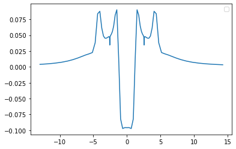

Stretched LDA Li_2¶
[1]:
import numpy as np
import matplotlib.pyplot as plt
from CADMium import Pssolver, Psgrid, Partition, Inverter
import CADMium
from copy import copy
[2]:
# dis_eq = np.linspace(1.0,5,30)
# dis_st = np.linspace(5.1,10,10)
# dis_eq = np.linspace(1.0,5,10)
# dis_st = np.linspace(5.1,10,3)
# distances = np.concatenate((dis_eq, dis_st))
distances = [5.122]
# distances = [2.0]
energy = []
for d in distances:
a = d/2
Za, Zb = 3,3
pol = 2
#Set up grid
NP = 7
NM = [6,6]
L = np.arccosh(15/a)
loc = np.array(range(-4,5)) #Stencil outline
grid = Psgrid(NP, NM, a, L, loc)
grid.initialize()
#Fragment a electrons [alpha, beta]
#Fragment a electrons [alpha, beta]
Nmo_a = [[1,2]]; Nmo_A = [[2,1]] #Number of molecular orbitals to calculate
N_a = [[1,2]]; N_A = [[2,1]]
nu_a = 0.5
#Fragment b electrons
Nmo_b = [[1,2]]; Nmo_B = [[2,1]]
N_b = [[1,2]]; N_B = [[2,1]]
nu_b = 0.5
#Molecular elctron configuration
Nmo_m = [[3,3]]
N_m = [[3,3]]
part = Partition(grid, Za, Zb, pol, [Nmo_a, Nmo_A], [N_a, N_A], nu_a,
[Nmo_b, Nmo_B], [N_b, N_B], nu_b, { "AB_SYM" : True,
"interaction_type" : "dft",
"kinetic_part_type" : "inversion",
"hxc_part_type" : "exact",
# "k_family" : "gga",
# "ke_func_id" : 500,
})
#Setup inverter object
mol_solver = Pssolver(grid, Nmo_m, N_m)
part.inverter = Inverter(grid, mol_solver, { "AB_SYM" : True,
"use_iterative" : False,
"invert_type" : "orbitalinvert",
"DISP" : False,
})
part.optPartition.isolated = True
part.scf({"disp" : True,
"alpha" : [0.6],
"e_tol" : 1e-5})
# atom = copy(part.E.Ea)
# part.KSa.solver[0,0].optSolver.iter_lin_solver = False
# part.KSa.solver[0,1].optSolver.iter_lin_solver = False
# part.KSA.solver[0,0].optSolver.iter_lin_solver = False
# part.KSA.solver[0,1].optSolver.iter_lin_solver = False
# part.KSb.solver[0,0].optSolver.iter_lin_solver = False
# part.KSb.solver[0,1].optSolver.iter_lin_solver = False
# part.KSB.solver[0,0].optSolver.iter_lin_solver = False
# part.KSB.solver[0,1].optSolver.iter_lin_solver = False
part.optPartition.isolated = False
part.scf({"disp" : True,
"alpha" : [0.6],
"max_iter" : 50,
"e_tol" : 1e-5,
"iterative" : False,
"continuing" : True})
energy.append(part.E.E)
print(f"Done with {d}")
# energy = np.array(energy)
# np.save('h2plus_distance.npy', distances)
# np.save('h2plus_overlap.npy', energy)
----> Begin SCF calculation for *Isolated* Fragments
Total Energy (a.u.) Inversion
__________________ ____________________________________
Iteration A B iters optimality res
___________________________________________________________________________________________
1 -8.63010 -8.63010 1.000e+00
2 -7.59689 -7.59689 1.538e-01
3 -7.38753 -7.38753 5.774e-02
4 -7.34922 -7.34922 2.769e-02
5 -7.34315 -7.34315 1.305e-02
6 -7.34281 -7.34281 6.081e-03
7 -7.34335 -7.34335 2.619e-03
8 -7.34343 -7.34343 1.427e-03
9 -7.34358 -7.34358 6.655e-04
10 -7.34365 -7.34365 3.113e-04
11 -7.34368 -7.34368 1.462e-04
12 -7.34369 -7.34369 6.884e-05
13 -7.34369 -7.34369 3.256e-05
14 -7.34369 -7.34369 1.547e-05
15 -7.34369 -7.34369 7.381e-06
----> Begin SCF calculation for *Interacting* Fragments
Total Energy (a.u.) Inversion
__________________ ____________________________________
Iteration A B iters optimality res
___________________________________________________________________________________________
1 -7.32464 -7.32464 10 +4.650e-15 +1.000e+00
2 -7.32866 -7.32866 11 +5.560e-15 +4.569e-02
3 -7.34060 -7.34060 9 +6.817e-15 +2.899e-02
4 -7.34060 -7.34060 10 +6.045e-15 +2.343e-02
5 -7.33583 -7.33583 8 +5.524e-14 +9.256e-03
6 -7.33571 -7.33571 7 +4.544e-15 +1.038e-02
7 -7.33833 -7.33833 7 +3.567e-15 +1.726e-03
8 -7.33903 -7.33903 6 +5.195e-15 +4.218e-03
9 -7.33788 -7.33788 6 +1.915e-14 +1.499e-03
10 -7.33717 -7.33717 6 +4.731e-15 +1.894e-03
11 -7.33751 -7.33751 6 +4.848e-15 +7.625e-04
12 -7.33798 -7.33798 5 +6.510e-15 +6.076e-04
13 -7.33800 -7.33800 5 +4.045e-15 +5.146e-04
14 -7.33779 -7.33779 5 +6.872e-15 +1.337e-04
15 -7.33769 -7.33769 4 +3.152e-14 +2.090e-04
16 -7.33774 -7.33774 4 +4.111e-14 +4.090e-05
17 -7.33779 -7.33779 4 +4.975e-15 +7.323e-05
18 -7.33781 -7.33781 4 +7.882e-15 +2.652e-05
19 -7.33779 -7.33779 4 +7.553e-15 +2.497e-05
20 -7.33778 -7.33778 4 +5.466e-15 +1.356e-05
21 -7.33778 -7.33778 3 +4.740e-15 +8.645e-06
Done with 5.122
[3]:
vars(part.E)
[3]:
{'Ea': -7.337782105762022,
'Eb': -7.337782105762022,
'Ef': -14.675564211524044,
'Tsf': 14.51597413441419,
'Eksf': array([[-3.74685652, -3.74685652]]),
'Enucf': -33.888205438333586,
'Exf': -3.041843099343745,
'Ecf': -0.30099395411366964,
'Ehf': 8.039504145852767,
'Vhxcf': 11.684638443813574,
'Ep': -1.806931800537365,
'Ep_pot': -3.6782187039973078,
'Ep_kin': 0.004774410724220246,
'Ep_hxc': 1.8665124927357226,
'Et': -16.48249601206141,
'Vnn': 1.757126122608356,
'E': -14.725369889453054,
'evals_a': array([-1.81050752, -1.81778993, -0.11855907, -1.81778993, -0.11855907,
-1.81050752]),
'evals_b': array([-1.81050752, -1.81778993, -0.11855907, -1.81778993, -0.11855907,
-1.81050752]),
'Ep_h': 1.8866167323214942,
'Ep_x': 0.0070897811354484475,
'Ep_c': -0.027194020721220125}
[4]:
part.nf
[4]:
array([[6.63782316e+00, 6.63782316e+00],
[5.94235124e+00, 5.94235124e+00],
[4.77075119e+00, 4.77075119e+00],
...,
[1.61342469e-08, 1.61342469e-08],
[1.65561742e-08, 1.65561742e-08],
[1.67729863e-08, 1.67729863e-08]])
[6]:
x,d1 = grid.axis_plot(part.nf[:,0])
x,d2 = grid.axis_plot(part.nf[:,1])
x,pot = grid.axis_plot(part.V.vp_pot[:,0])
x,hxc = grid.axis_plot(part.V.vp_hxc[:,0])
x,har = grid.axis_plot(part.V.vp_h[:,0])
x, xc = grid.axis_plot(part.V.vp_x[:,0] + part.V.vp_x[:,1])
x, vp = grid.axis_plot(part.V.vp[:,0])
x, xca = grid.axis_plot(part.KSA.V.vx[:,0] + part.KSA.V.vc[:,0])
x, xcb = grid.axis_plot(part.KSB.V.vx[:,0] + part.KSB.V.vc[:,0])
# plt.plot(x, pot)
# plt.plot(x, har)
plt.plot(x, vp)
plt.legend()
No handles with labels found to put in legend.
[6]:
<matplotlib.legend.Legend at 0x7fb214471be0>

[30]:
[30]:
[<matplotlib.lines.Line2D at 0x7fb2bc966760>]

[ ]:
h_energy = part.E.Ea
plt.scatter(distances, part.E.E - 2 * h_energy)
plt.axhline(y=0, alpha=0.5, c="grey", ls=":")
# plt.ylim(-.2,.1)